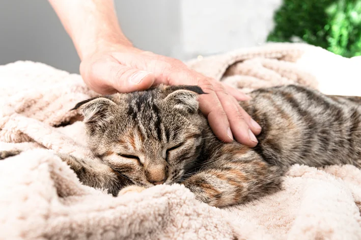
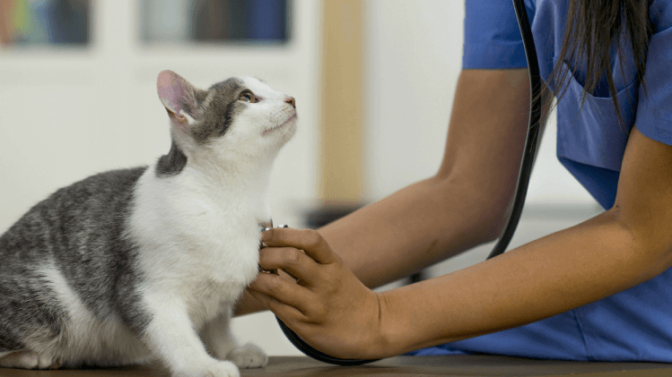
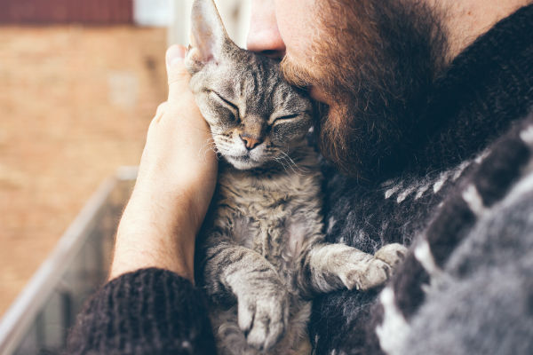

<!--
<!DOCTYPE html>

<html lang="pt-br">
<head>
    <meta charset="UTF-8">
    <meta name="viewport" content="width=device-width, initial-scale=1.0">
    <title>Projetos e Doações | Gatitos ONG</title>
    <link rel="stylesheet" href="css/style.css">
</head>
<body>
    <header>
        <h1>Projetos, Voluntariado e Doações</h1>
        <nav>
            <ul>
                <li><a href="index.html">Início</a></li>
                <li><a href="projetos.html">Projetos e Doeações</a></li>
                <li><a href="cadastro.html">Quero ser Voluntário</a></li>
            </ul>
        </nav>
    </header>
    <main>
        <section>
            <h2>Projetos Atuais</h2>
            <p>Veja como ajudamos a transformar a vida dos nossos amigos gatos que sofrem com abandono e doenças.</p>
            <article>
                <h3>Acolhimento</h3>
                <p>Recebos gatos que estão em estado crítico de saúde e vulnerabilidade para cuidado veterinário.</p>
                
            </article>
            <article>
                <h3>Cuidado</h3>
                <p>Trabalhamos com um bom suporte de médicos veterinários que auxiliam por meio de doações e eventualmente
                    voluntários que disponibilizam tempo para trabalhar em prol dos felinos.</p>
                
            </article>
            <article>
                <h3>Nova Família</h3>
                <p>Após todo o cuidado necessário conseguimos sempre encaminhar os nosso amigos à famílias interessadas em adotar um novo amigos
                    ou para abrigos de animais registrados na prefeitura.</p>
                
            </article>
        </section>
        <section>
            <h2>Quero ser Voluntário</h2>
            <p>Sua ajuda é essencial! Trabalhamos não só com o cuidado direto com os animais, 
                mas também com concientização nas comunidades locais, mostrando a importância do cuidado 
                e os problemas dos maus tratos aos aniamis.</p>
            <a href="cadastro.html">Cadastrar</a>
        </section>

        <section>
            <h2>Como Doar e Acompanhar os Recursos</h2>
            <p>Sua contrubuição é transparente e faz a diferença. Use nossa plataforma para doar.</p>
            <p>Meta da Campanha: R$ 10.000,00</p>
            <p>Estamos com uma meta especial para a aquisição de material veterinário para nosso consultório.</p>
            <progress value="65" max="100">65%</progress>
            <p>Estamos em 65% da meta!</p>
        </section>
    </main>
    <footer>
        <section>
            <h2>Contato</h2>
            <p>Email: contato@ong.org | Telefone: (10) 1234-5678</p>
        </section>
        <p>&copy; 2025 Gatitos ONG. Todos os direitos reservados.</p>
    </footer>
    <script src="js/script.js"></script>
*</body>
*</html>
-->